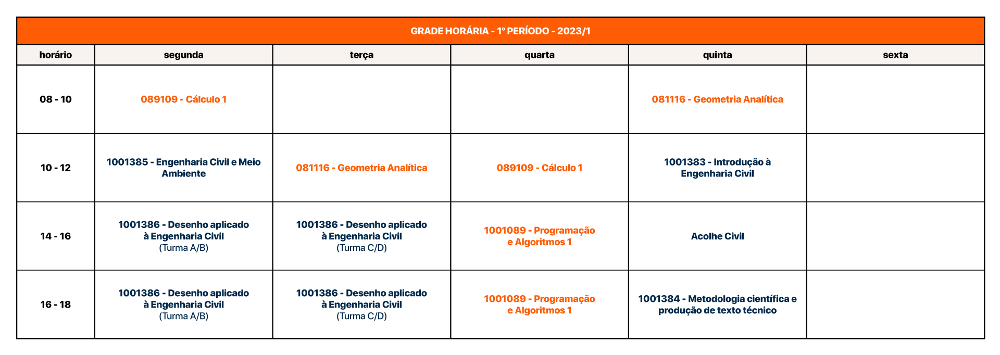

START
Agora começam os melhores anos da sua vida!
Além das incríveis festas de quinta-feira, você conhecerá muita gente e fará amizades que vão durar a vida toda. Isso tudo enquanto tenta passar em Cálculo 1, Programação e GA (sim, você tá lascado(a)).
Este manual foi feito por seus queridos(as) veteranos(as), que por incrível que pareça, não querem SÓ “zoar” com você. Estamos aqui para receber a todos e todas com muita animação e da melhor maneira possível, e auxiliá-los a vencer as dificuldades de uma nova etapa e futuramente de viver em uma nova cidade, numa situação completamente diferente e desafiadora!
Neste manual você encontrará informações valiosas para seu primeiro ano neste curso maravilhoso e nesta cidade maravilhosa que é San Charles.
CURSO
O curso de Engenharia Civil na Universidade Federal de São Carlos foi criado em abril de 1977 e teve seu primeiro vestibular em julho de 1978 com apenas 30 vagas. A estrutura curricular sofreu algumas alterações desde sua criação até chegar, em 2019, no Projeto Pedagógico hoje vigente.
Projeto pedagógico
O curso de Engenharia Civil da UFSCar atualmente está regimentado no Projeto Pedagógico de Curso (PPC) de 2019. É possível encontrar o arquivo no site do DECiv (Departamento de Engenharia Civil), onde nele está presente, além do histórico do curso no Brasil e na UFSCar, a estrutura curricular da graduação e a ementa de todas as disciplinas, o número de créditos em cada disciplina e os pré-requisitos. O PPC 2019 pode ser consultado em:
A graduação apresenta em seu currículo seis núcleos, são eles:
-
Núcleo de formação básica
Engloba atividades relacionadas com as ciências básicas, humanidades e ciências sociais. Como por exemplo Cálculo, Geometria Analítica e Física
-
Núcleo de formação profissionalizante
Referente à ciências aplicadas, como Materiais e Tecnologia de Construções, Topografia e Geologia de Engenharia
-
Núcleo de formação específica
Atividades dentro da área de Engenharia Civil. Como é o caso de Urbanismo e Infraestrutura Urbana, Projeto de Edificações e Pavimentação
-
Núcleo de consolidação de formação
Disciplinas como Estágio e o TCC
-
Núcleo de aprofundamento
As disciplinas optativas que permitem uma formação mais aprofundada nas áreas de interesse
-
Núcleo de formação complementar
Promove a interação do estudante com a comunidade interna e externa
O Engenheiro UFSCar
O egresso do curso de Engenharia Civil da UFSCar deverá ser um(a) engenheiro(a) apto a pesquisar, desenvolver, adaptar e utilizar novas tecnologias para reconhecer necessidades e procurar soluções criativas de Engenharia para elas, sempre comprometido(a) com sua responsabilidade social e desenvolvimento sustentável.
Para atingir esses objetivos, o Currículo do curso foi estruturado para fornecer a seus egressos competências e habilidades para formular problemas de engenharia e conceber soluções desejáveis em todas as áreas da engenharia civil, saber se comunicar eficientemente na forma escrita, oral e gráfica e saber trabalhar e liderar equipes multidisciplinares.
Em resumo, a UFSCar tem o compromisso de formar engenheiros(as) do mais alto nível, todos comprometidos a transformar nosso mundo da melhor forma que cada um conseguir.
O Curso de Graduação em Engenharia Civil
O curso de graduação em Engenharia Civil da UFSCar tem duração prevista de cinco anos, ou considerando o regime de semestres, dez semestres letivos. Conforme normas da UFSCar, o estudante terá direito a realizar seu curso no período máximo de nove anos, sendo considerado jubilado após este prazo. Para manter sua vaga na instituição de ensino pública, o aluno deverá obter um desempenho mínimo de 8 créditos a cada dois semestres, e de 4 créditos no primeiro semestre na UFSCar.
Desde 2013, com a implantação do projeto REUNI são oferecidas anualmente oitenta vagas para ingresso através do SISU. Além disso, há a possibilidade de ingresso através de transferências internas e externas. O calendário acadêmico apresenta anualmente as datas referentes a estes processos de ingresso.
Algumas disciplinas são de extrema importância para o bom andamento do curso, uma vez que são tidas como pré-requisitos para que outras sejam cursadas. O aluno deve garantir média final igual ou superior a 6 e frequência de no mínimo 75% em cada disciplina para ser aprovado. Caso esta média seja inferior a 6 mas superior a 5 e frequência mínima do aluno seja 75%, este poderá realizar uma avaliação complementar (também conhecida como “recuperação”) estando apto a prosseguir na disciplina seguinte.
Neste primeiro semestre, Cálculo I, Geometria Analítica, e Desenho Aplicado à Engenharia Civil merecem uma atenção especial, principalmente as duas primeiras, que servirão como base para muitas outras disciplinas, por exemplo Cálculo 2, Cálculo 3, Estática, entre outras.

Nos períodos seguintes, as “Mecânicas” dos Sólidos, dos Solos, e Estática, bem como as disciplinas de Fenômeno dos Transportes, Análise Estrutural e Hidráulica são algumas que merecem destaque para garantir a conclusão do curso sem muitos problemas.
A cada semestre, um novo horário é estabelecido, porém é apenas no segundo semestre em que você poderá montar a sua grade para cada uma das disciplinas. Quando não é preciso realizar nenhuma matéria de recuperação (ou seja, quando você está no perfil), o horário provavelmente não vai gerar conflitos entre as matérias (a menos que role problemas na coordenação), além de ser realizada a pré-inscrição automática no SIGA.
É importante lembrar que os horários são estabelecidos pelas coordenações de curso que oferecem cada uma das matérias e geralmente são divulgados antes do final do semestre anterior, e logo após esta divulgação, é possível pedir por mudanças (nas matérias oferecidas pelo DECiv). Quando for o caso, converse com um dos representantes discentes do curso.
Falado tudo isso, segue ao lado um fluxograma para você manter registro das suas futuras reprovações. Nesse fluxograma é possível observar as matérias que vocês terão que fazer a cada semestre (mas sendo existe a possibilidade de fazê-las fora do semestre
Siglas Importantes
AT (Aulas Teóricas): Prédios da UFSCar onde a maior parte das aulas são ministradas e, portanto, onde você passará - ou deveria - a maior parte do tempo (um bom lugar pra chorar). Numerados de 1 a 10, desafio você a encontrá-los no mapa deste manual.
AVA2 (Ambiente Virtual de Aprendizagem): Costumava cair mais que o Neymar, mas hoje em dia já está bem melhor. É a plataforma de aprendizagem utilizada, na qual os alunos podem acessar documentos disponibilizados pelos professores (materiais de estudo, trabalhos, listas de exercícios, entre outros). Para os alunos de graduação, os campos "Nome de usuário" e "Senha" são cadastrados por padrão com o número do CPF.
Site: https://ava2.ead.ufscar.br/
BCo (Biblioteca Comunitária): Localize-a no número 3 da seção laranja do mapa deste manual. É o lugar ideal para estudar e sofrer em grupo antes das provas e onde ocorrem as tutorias. Conta com um espaço HQ, a biblioteca infantil, coleções especiais, acervo de CDs, DVDs, mapas e livros em braille, além de todas as coleções impressas e digitais.
Site: https://www.bco.ufscar.br/
CAASO (Centro Acadêmico Armando de Salles Oliveira): É o CA da USP de São Carlos, nosso inimigo número 1. Mas acalme-se, você não será um(a) total estranho(a) por ter amigos de lá, afinal, no fundo, mas bem no fundo, somos todos amigos.
CoG (Conselho de Graduação): Trata-se de um órgão consultivo e deliberativo da Pró- Reitoria de graduação. De onde surgem todas as resoluções e informações que você geralmente quer/precisa saber.
Site: http://www.prograd.ufscar.br/conselho-de-graduacao-1
DCE (Diretório Central de Estudantes): É o conselho estudantil da UFSCar. É nesse espaço que os centros acadêmicos dialogam a fim de trabalhar juntos por direitos pertinentes aos estudantes em geral, além de promover o intercâmbio cultural e artístico, de maneira que a vida universitária seja um momento de formação de cidadania.
Facebook: https://www.facebook.com/dcelivreufscar/
DIGRA (Divisão de Gestão e Registro Acadêmico): Órgão responsável pela centralização das informações sobre a vida acadêmica dos alunos dos cursos de graduação. É onde se deve ir para fazer a carteirinha de estudante. https://www.acessibilidade.ufscar.br/apresentacao/digra
DM (Departamento de Matemática): O terror de todos, o DM é o departamento que fica responsável por oferecer matérias essenciais para os cursos de exata, como Cálculo e Geometria Analitíca, seus professores são… peculiares, tendo personalidades variadas de Doce e amigável, até o famoso “5,99 não é 6 então tá reprovado”.
IRA (Índice de Rendimento Acadêmico): Essa é a sua média, calculado semestralmente no ato da consolidação do período, logo após a digitação de notas, tendo como base o histórico escolar do estudante na UFSCar. Você pode consultá-lo sempre no SIGA.
IL (Instituto de Línguas da Ufscar): Oferece cursos gratuitos na modalidade remota de Inglês, espanhol, Língua Brasileira de Sinais (Libras) e Português como Língua Estrangeira, com emissão de certificado.
Site: https://www.institutodelinguas.ufscar.br/pt-br
GECiv (Grupo de Extensão da Engenharia Civil): União entre os brothers da casa. Fundado em 2017, o GECiv é a união dos Grupos de Extensão do Departamento de Engenharia Civil, sendo formado pelo CACiv - Centro Acadêmico da Engenharia Civil UFSCar, SECiv - Semana da Engenharia Civil - UFSCar, EDIFICar Jr. e PET Civil - UFSCar.
LIG (Laboratório de Informática de Graduação): “A salinha dos pc” Criado para atender os alunos de graduação, tanto em relação ao ensino, quanto na confecção de trabalhos.
PPC (Projeto Pedagógico de Curso): Documento no qual você encontrará os objetivos gerais e peculiaridades do curso, sua matriz curricular e a respectiva operacionalização, a carga horária das atividades didáticas e da integralização do curso, a concepção e a composição das atividades de estágio curricular e complementares, etc. Basicamente a Bíblia da Eng. Civil UFSCar.
Site: http://www.prograd.ufscar.br/cursos/cursos-oferecidos-1/engenharia-civil/PPCEC2019completoV2.pdf
ProGrad (Pró-Reitoria de Graduação): É a instância administrativa da UFSCar que gerencia a vida acadêmica dos estudantes, supervisionando e coordenando as atividades de ensino da graduação. No site abaixo você provavelmente sempre vai encontrar o que procura, saiba a quem se dirigir.
Site: http://www.prograd.ufscar.br/
RA (Registro Acadêmico): Esse é seu “número de chamada”. Esse número vai te acompanhar até a formatura, então decore o quanto antes.
RU (Restaurante Universitário): Comida por R $4,20. Embora tenha dias que você ache melhor não pensar no que está comendo, o famoso bandejão é capaz de surpreender. É absurdamente lotado no começo do ano, logo, recomenda-se não ir almoçar nos horários de pico (das 11:30 às 13:00), mas durante o semestre a fila diminui. No link abaixo você pode consultar os horários de funcionamento bem como o cardápio da semana.
SIGA (Sistema Integrado de Gestão Acadêmica): Já pode fixar na barra dos favoritos. O SIGA permite que o aluno consulte sua situação como graduando, podendo solicitar ações administrativas como trancamento e cancelamento de matrícula, solicitação de histórico e atestado de matrícula. Além disso, antes do início de cada semestre (a partir do segundo semestre do curso), é necessário que o aluno acesse o SIGA para a realização de sua rematrícula e da escolha de disciplinas a serem cursadas.
Site: https://sistemas.ufscar.br/siga/login.xhtml
SIn (Secretaria Geral de Informática): É um órgão vinculado à Reitoria que tem por finalidade gerenciar serviços de informática para a Universidade. Eles disponibilizam computadores com internet e wi-fi para alunos 24h por dia.
Site: https://www.sin.ufscar.br/
Instituições
DECIV
O Departamento de Engenharia Civil hoje, além de ambientes destinados a atividades administrativas, conta com instalações para laboratórios de Informática para Ensino de Graduação, de Materiais e Componentes da Construção Civil, Sistemas Estruturais, Hidráulica e Sistemas Prediais, Mecânica dos Solos, Topografia, Estradas, Saneamento, Instalações Elétricas, Geoprocessamento e Geociências, atendendo às necessidades de pesquisa e de ensino dos Cursos de Graduação em Engenharia Civil e de Pós-Graduação em Engenharia Urbana e Construção Civil.
Site: http://www.deciv.ufscar.br/
Insta: @civil.ufscar
CCET
O Centro de Ciências Exatas e de Tecnologia abriga os departamentos das áreas de Ciências Exatas e Engenharias do campus de São Carlos. É o maior Centro da UFSCar.
O CCET e os departamentos englobados oferecem 18 cursos de graduação e 16 programas de pós-graduação, que são apoiadas por uma complexa infraestrutura técnica e laboratorial, resultando em produção científica considerável ao longo de sua atuação.
Site: https://www.ccet.ufscar.br/pt-br
ProGrad
A Pró-Reitoria de Graduação é a divisão da Reitoria responsável pelas questões que envolvem a graduação. Essa divisão atende a estudantes, docentes e coordenações. É o órgão responsável por grande parte das decisões relacionadas com o andamento das graduações dentro da UFSCar. São também responsáveis pelo Conselho de Graduação, órgão colegiado máximo específico da graduação, onde são feitas as reclamações e proposições de melhorias.
Site: http://www.prograd.ufscar.br/
PROJETOS DE EXTENSÃO
Como toda Universidade a UFSCar não tem apenas seus magníficos cursos a oferecer, existem inúmeras outras coisas que você pode fazer e desenvolver na universidade durante os seus 5 anos por aqui.
Grupos de Extensão e Projetos são o que tornam a graduação mais completa, pois são lugares onde você pode se descobrir cada vez mais, adquirindo novas habilidades e prazeres por certas áreas que você nem mesmo conhecia.
Com isso nós encorajamos você a ir atrás dos grupos que te chamam atenção e tente entrar neles, pois tenho certeza que você não irá se arrepender da experiência que irá conquistar, além de incríveis amizades.
Grupos de Extensão da Engenharia Civil GECiv
Começando com os grupos que você mais ouvira falar durante a graduação por estarem ligados diretamente com tudo o que a Civil faz, temos os 4 grupos vinculados a Engenharia Civil UFSCar.
CACiv – Centro Acadêmico
O Centro Acadêmico da Engenharia Civil é uma entidade que representa todos os estudantes do curso e é responsável por manter um canal de comunicação entre os alunos e a coordenação. Além disso, é responsável por organizar debates e discussões, divulgação de atividades, roles para os estudantes e pela venda de produtos incríveis, entre outras.
Dessa maneira, busca integrar os discentes a fim de obter uma melhor experiência durante todo o curso contribuindo para a sua formação, fortalecendo laços de amizade e ajudando-o a se tornar um profissional completo.
Para saber mais:
Facebook: https://www.facebook.com/cacivilufscar/
Insta: @cacivufscar
EDIFICar Jr.
A EDIFICar Jr., é uma empresa júnior sem fins lucrativos pertencente ao GECiv da Universidade Federal de São Carlos-UFSCar. Seu diferencial está na constituição de seus membros que são apenas estudantes da graduação em Engenharia Civil. A empresa oferece serviços e soluções de projetos em Engenharia Civil, o que proporciona aos universitários colocar em prática os conhecimentos adquiridos na graduação.
Para saber mais:
Facebook: https://www.facebook.com/edificarjunior/
Insta: @edificarjr
PET - Civil
O Programa de Educação Tutorial do curso de Engenharia Civil da UFSCar, PET Civil – UFSCar, é um grupo formado por alunos da graduação em Engenharia Civil, sob a tutoria de um professor do DECIV. O grupo visa promover a formação acadêmica ampla e de qualidade dos alunos de graduação envolvidos direta e indiretamente com o programa, estimulando a cidadania, a consciência social e a melhoria dos cursos de graduação. Além disso, busca garantir aos alunos oportunidades de vivenciar experiências não presentes nas estruturas curriculares convencionais e, a partir do conhecimento adquirido, trabalhar em prol da comunidade.
Para saber mais:
Facebook: https://www.facebook.com/PETcivil.ufscar/
Insta: @petcivilufscar
SECiv - Semana da Engenharia Civil
A Semana da Engenharia Civil – SECiv é um evento organizado anualmente por alunos de graduação do curso de Engenharia Civil da Universidade Federal de São Carlos -UFSCar, com o apoio do Departamento de Engenharia Civil da UFSCar – DECiv. Surgiu a partir da necessidade de trazer à universidade atividades extracurriculares que permitam maior conhecimento a respeito das inúmeras áreas da Engenharia Civil.
Para saber mais:
Facebook: https://www.facebook.com/seciv.ufscar/
Insta: @seciv.ufscar
Grupos de Extensão da UFSCar
Agora que você já conhece os grupos da família GECiv, listamos aqui uma grande quantidade de grupos que você pode participar que são fora da civil, onde você vai poder conhecer várias pessoas de fora do curso com diferentes interesses.
Atlética UFSCar
A Associação Atlética Acadêmica (AAA) da UFSCar é uma entidade sem fins lucrativos composta de alunos de graduação e pós-graduação da UFSCar Campus São Carlos, que tem como objetivo financiar e incentivar o esporte na UFSCar. Qualquer aluno de graduação ou pós graduação pode ser membro da Atlética e ajudar a construir o esporte na Federal.
Para saber mais:
Facebook: https://www.facebook.com/AAAUFSCar/
Insta: @atleticaufscar
Atom Jr. – UFSCar
Empresa Jr. da Química aceita qualquer aluno matriculado em algum curso da Universidade Federal de São Carlos – Campus São Carlos, seu principal objetivo é aplicar conhecimentos adquiridos ao longo da graduação em projetos de consultoria e melhorar também o desenvolvimento empresarial dos clientes na área química.
Para saber mais:
Site: https://www.atomjr.com.br/blog
Insta: @atom.jr
Projeto MINHA - UFSCar:
A MINHA é uma rede de apoio para mulheres vítimas de violência, seja ela física, psicológica, moral ou patrimonial. Com a ajuda de nossas profissionais parceiras, oferecemos consulta psicológica, com valor abaixo do mercado, e orientação jurídica gratuita para mulheres que já passaram ou estão passando por alguma situação de violência.
A MINHA tem a potência de estar inserida na luta política e social pela conquista da segurança e liberdade das mulheres, devolvendo a possibilidade de viverem dignamente, além de ampliar o enfrentamento da violência e suas consequências.
Insta: @somosminha
Baja UFSCar
Equipe multidisciplinar composta por estudantes de diversos cursos da UFSCar que visa o desenvolvimento de um protótipo off road para a participar das competições de Baja SAE.
Para saber mais:
Site: hhttp://www.baja.ufscar.br/
Insta: @bajaufscar
Bateria UFSCar
A Bateria UFSCar é composta por mais de 200 alunos e nesse ano completará 21 anos de muito samba e gingado, dedicação e esforço, muita diversão, corante e amizade. O principal papel da Bateria é torcer nos jogos, incentivando os atletas com uma energia única. Mas não para por aí! São realizadas apresentações de palco, ações sociais e há participação nos desafios de baterias universitárias, de onde a Bateria UFSCar já trouxe muitos troféus e experiências. Tudo isso é feito como família: a amizade entre membros e o amor pela Bateria torna tudo mais leve na graduação. Para entrar NÃO precisa saber tocar, basta participar que a equipe irá ajudar na capacitação e desenvolvimento das habilidades necessárias.
Para saber mais:
Facebook: https://www.facebook.com/BateriaUFSCar
Campanha USP do Agasalho
A Campanha USP do Agasalho, fundada em 2007, é um projeto social voluntário formado por alunos das universidades de São Carlos que mobilizam dezenas de participantes em eventos como: Saída às Ruas, triagens e visitas a entidades, visando ajudar aqueles que sofrem com o inverno de São Carlos. O projeto arrecada e doa roupas para mais de 40 instituições carentes de São Carlos e região. Além disso, por meio de visitas e atividades sociais, visa diminuir a distância entre a universidade e a comunidade.
Para saber mais:
Site: https://campanhauspdoagasalho.eesc.usp.br/
Insta: instagasalho
CATI Jr. – UFSCar
A CATI é a empresa júnior do Departamento de Computação da UFSCar. Conta com alunos de Ciência e Engenharia de Computação, e aceitam alunos de todos os cursos da UFSCar, oferece consultoria tecnológica e desenvolvimento de soluções computacionais, como sistemas web e aplicativos.
Para saber mais:
Site: http://catijr.com.br/
Insta: @catijr
Dragão Branco Aerodesign – UFSCar
Equipe interdisciplinar, com alunos ligados ao setor da mobilidade, construam uma aeronave rádio controlada que seja capaz de alçar voo com a maior carga útil possível. Com a missão de competir no aerodesign, por meio dessa meta, busca-se a promoção do aprendizado na área aeronáutica, o intercâmbio de conhecimento entre as equipes e o desenvolvimento do espírito de trabalho em equipe, de liderança e planejamento, do comportamento ético profissional e da capacidade de lidar com dificuldades.
Para saber mais:
Facebook: http://www.facebook.com/DragaoBrancoAerodesign/
Insta: @dragaobranco_aerodesign
Enactus – UFSCar
Enactus é uma organização internacional sem fins lucrativos que reúne estudantes, acadêmicos e líderes de negócios empenhados em usar o poder da ação empreendedora para melhorar a qualidade de vida das pessoas que necessitam. Os líderes estudantis da Enactus criam e implementam projetos de capacitação em comunidades ao redor do mundo. O Enactus possui operações em 39 países, com cerca de 1.500 times ativos e 8.700 projetos sociais.
Para saber mais:
Facebook: https://www.facebook.com/enactusufscar/
Insta: @enactus_ufscar
Engenheiros Sem Fronteiras - Núcleo São Carlos
Organização sem fins lucrativos cuja missão é promover o desenvolvimento humano e sustentável por meio dos conhecimentos e técnicas da engenharia. O ESF é uma ONG internacional que chegou ao Brasil em 2010 na cidade de Viçosa, MG. O núcleo de São Carlos foi fundado em 2018, e trabalha com projetos que dependem da demanda da cidade e da disponibilidade da equipe, indo de workshops até a construção de espaços vivos em escolas. São aceitos alunos da UFSCar, USP e UNICEP.
Para saber mais:
Facebook: https://www.facebook.com/esf.saocarlos/
Insta: @esf.saocarlos
Fórmula Route – UFSCar
É um grupo de extensão da Universidade Federal de São Carlos, criado em 2012, que visa projetar e construir um protótipo de corrida para participar das competições promovidas pela SAE (Sociedade dos Engenheiros Automotivos).
O grupo objetiva proporcionar aos membros uma oportunidade de trabalhar em equipe e enfrentar desafios que simulam um ambiente profissional. Além disso, visa testar, de forma teórica e prática, os conhecimentos aprendidos na graduação para o desenvolvimento de um protótipo de corrida.
Para saber mais:
Facebook: https://www.facebook.com/formula.ufscar/
Insta: @formularouteufscar
GIRe³ - UFSCar
O GIRe³ UFSCar - Grupo de Incentivo à Redução, Reutilização e Reciclagem - é um grupo de Extensão composto por alunos da Universidade Federal de São Carlos que se uniram com o objetivo de melhorar os hábitos da população de São Carlos, mostrando caminhos e incentivando a prática dos 3 R’s (Reduzir, Reutilizar e Reciclar).
Para saber mais:
Site: http://www.gire.ufscar.br/
Insta: @gireufscar
Liga do Mercado Financeiro – São Carlos
Criada em 2014, a Liga de Mercado Financeiro - São Carlos é uma organização sem fins lucrativos (grupo extracurricular) que surgiu com o objetivo de difundir os conhecimentos relacionados ao mercado financeiro para a comunidade acadêmica nas duas grandes universidades da cidade de São Carlos: USP e UFSCar. Nosso objetivo como grupo é capacitar nossos membros para atuarem no mercado financeiro e aproximar o mercado das universidades, gerando impacto social no caminho.
Para saber mais:
Site: https://www.lmf-saocarlos.com/
Insta: @lmf_saocarlos
Operação Natal
A Operação Natal, antigo Natal Solidário, é um grupo de extensão organizado por universitários da UFSCar e da USP. O principal objetivo do projeto é ampliar a magia do Natal através da sinergia dos membros e impactar a vida das pessoas que mais precisam por meio de ações de responsabilidade social. Além das arrecadações, o projeto também promove a entrega de presentes às crianças de instituições selecionadas assim como à conscientização por meio de atividades nas escolas, instituições e para a comunidade são-carlense, nas quais os membros trabalham o altruísmo e a cidadania com o objetivo de impactar a sociedade e espalhar a magia do Natal.
Para saber mais:
Facebook: https://www.facebook.com/operacaonatalsc/
Insta: @operacao_natal
Projeto Pontinha
O Projeto Pontinha oferece para as crianças de São Carlos oportunidades de desenvolvimento através de atividades escolares, contribuindo para a criação de valores éticos e socioculturais para a comunidade e os voluntários participantes.
Para saber mais:
Facebook: https://www.facebook.com/pontinhaprojeto/
Insta: @projetopontinha
Red Dragons – UFSCar
A equipe de robótica Red Dragons UFSCar foi fundada em 2013 e trabalha com dois projetos. O projeto robótico na escola leva aulas de robótica para crianças e jovens de escola públicas. A Red tem como missão desenvolver e difundir conhecimentos científicos de robótica e capacitar seus membros nos âmbitos técnico e pessoal. O processo seletivo fica aberto no começo do semestre para as áreas de Controle & Estratégia, Eletrônica, Gestão de Pessoas, Marketing, Mecânica, Visão Computacional e Financeiro.
Para saber mais:
Facebook: https://www.facebook.com/RedDragons.UFSCar/
Insta: @reddragons.ufscar
Sanca Social
A missão do Sanca Social é contribuir para o desenvolvimento social da comunidade são carlense por meio de projetos e ações que mobilizem, conscientizem e aproximem os estudantes e a sociedade.
Para saber mais:
Facebook: https://www.facebook.com/sancasocial/
Insta: @sancasocial
Sobre iniciação científica
A Iniciação Científica (IC) é uma atividade de pesquisa desenvolvida por alunos da graduação, com o apoio de um professor orientador que seja da área específica que o trabalho será realizado e que é de seu interesse: Construção Civil, Geotecnia, Arquitetura e Urbanismo, Hidráulica e Saneamento e Estruturas. O intuito é contribuir para as formações acadêmica e profissional dos alunos, valorizando a iniciação no processo da pesquisa científica.
Ela proporciona aos alunos a aprendizagem de métodos de pesquisa, estimula o desenvolvimento do pensar cientificamente e da criatividade, decorrentes das condições criadas pela pesquisa. Atividades comuns na IC são: revisão bibliográfica, acompanhamento e/ou desenvolvimento da parte experimental (não todas as propostas de IC contemplam esta atividade, pois algumas são inteiramente teóricas), formatação e apresentação de trabalhos. As atividades seguem um cronograma disposto pelo edital da CoPICT e têm duração total de um ano geralmente. Mesmo que o aluno não possua experiência, terá o apoio e acompanhamento e disposição constante de um orientador, interagindo com professores, pesquisadores e sempre que possível, com profissionais em empreendimentos econômicos diversos e outras organizações sociais no país.
A Iniciação Científica pode ser feita com ou sem bolsa, tudo dependerá do seu projeto ser aprovado por uma agência financiadora, como por exemplo CNPq (Conselho Nacional de Desenvolvimento Científico e Tecnológico) e FAPESP (Fundação de Amparo à Pesquisa do Estado de São Paulo), mas se seu projeto não for contemplado com a bolsa você poderá ser voluntário durante sua pesquisa.
O Programa de Incentivo à Iniciação Científica (PIIC) é uma atividade realizada pelo PET Civil que tem por objetivo a propagação da importância da pesquisa científica para a universidade e para a comunidade externa, através da participação de alunos do curso de Engenharia Civil de universidades da região em apresentações oral e em banner de suas iniciações científicas. As apresentações são julgadas, além de resumos das pesquisas enviados pelos graduandos e é determinado um projeto vencedor, com prêmio para o autor.
Se você possui interesse em fazer uma IC, fique atento, pois alguns professores divulgam oportunidades de trabalhos para os alunos que desejam fazer pesquisa, ou então você pode apresentar a algum professor uma ideia de trabalho que você tenha para que ele possa te orientar.
Para mais informações:
Instagram: @pesquisaciv
E-mail: pesquisaciv.ufscar@gmail.com
Site da Coordenadoria dos Programas de Iniciação Científica e Tecnológica
UFSCar
A Universidade Federal de São Carlos, contém 4 campus, que abrangem 6.450.000 m² de área total e 188.100 m² de área construída só no Campus de São Carlos, além de quase 27 mil alunos matriculados, sendo assim, maior que muitas cidades do Brasil. Por isso, é importante conhecer bem a federal para não se perder.
Aproveite também o mapa como um check-list, você terá 5 anos (ou mais) para conhecer a federal, não seria nada legal sair sem passar por cada cantinho dela antes.
Lugares para comer na faculdade
Muitas vezes você terá que passar o dia inteiro na federal e não terá tempo de voltar para casa e preparar suas refeições nos dias mais corridos. Além disso, não se vive apenas dessas duas refeições, uma alimentação balanceada e bem dividida é essencial para ter uma vida saudável e muita energia para participar de todas as atividades oferecidas na universidade. Lembre-se sempre de comer um lanchinho nos intervalos das aulas. Para isso existem alguns locais dentro da faculdade que oferecem desde almoço e jantar até alguns salgados e doces para os intervalos de aula.
- Começando pelo mais importante, o RU (Restaurante Universitário), ele se localiza bem no centro da federal (entre as áreas norte e sul - nº18 laranja no mapa). Para utilizá-lo é necessário a carteirinha de estudante que fica disponível após algumas semanas do começo do semestre, mas não se desespere, você ainda poderá frequentá-lo nesse período, para isso basta pedir para algum funcionário do RU que ele indicará o local onde você deve ir para retirar uma espécie de carteirinha provisória (sempre tem fila para isso, então vá preparado). O uso dela é semelhante à carteirinha de estudante, ela deve ser recarregada no caixa do RU, podendo ser paga em dinheiro ou no cartão, onde o valor do almoço ou jantar é R$4,20 para aluno regular. O almoço é oferecido de segunda a sábado das 11:15 até 13:30 e jantar de segunda a sexta das 17:15 até as 19:00.
- PQ (Pão de Queijo): Fica próximo dos AT1 e AT8 na área sul (é o pratinho azul perto do nº19 laranja no mapa), sendo oferecido prato feito no almoço além de alguns tipos de salgados, ficando aberto o dia inteiro.
- LuDog 's (localizado em um quiosque próximo ao DECiv - perto do nº3 branco no mapa) e Jamaica Food Truck (localizado atrás do AT10 - atrás do nº5 verme no mapa): Ambos oferecem lanches feitos na hora para todos os gostos, além de diversos salgados como croissant, coxinha, esfiha entre outros. Além desses, entre a BCO (Biblioteca Comunitária) e o Departamento de Engenharia de Produção existem diversos Food Truck’s, com uma infinidade de opções, como pão de batata, coxinha, mini pizza, croissant entre outros, sendo que todos esses ficam abertos o dia inteiro.
Tutoriais
Neste capítulo, você encontrará os principais tutoriais de sistemas que você provavelmente (quase sempre rs) terá que usar na federal.
E-mail institucional e carteirinha
É tipo seu crachá de aluno, todo mundo precisa ter se quiser usar as coisas da federal como biblioteca, reservar espaços, comer no RU e etc. O e-mail também é importante visto que ele será seu canal principal de comunicação com a universidade.
Como criar o e-mail institucional?
Acesse o sistema SAGUI, usando o mesmo login e senha do Sistema SIGA: https://sistemas.ufscar.br/sagui
No menu “Minhas Solicitações”, já está disponível a opção de criação de seu e-mail institucional com domínio @estudante.ufscar.br.
Anote a Senha temporária, ela será solicitada na primeira vez em que você acessar sua conta e, logo em seguida, será solicitado que você a altere.
Depois é só acessar seu e-mail Aqui
Link do tutorial com imagens
Carteirinha estudantil
A carteirinha estudantil serve para sua identificação e pode servir para outros benefícios, é muito importante tirá-la. Segue o passo a passo abaixo
- O portal de solicitação é o “SAGUI” disponível no link: https://sistemas.ufscar.br/sagui/login?returnUrl=%2F
- Acesse com o seu RA e a senha utilizada no Sistema de Gestão Acadêmica (SIGA).
- Caso seja necessário, atualize os dados cadastrais no sistema SIGA, clicando sobre seu nome no canto superior direito da tela. Não se esqueça de preencher o LOCAL DE NASCIMENTO. Depois de atualizados todos os dados cadastrais retorne ao link da carteirinha e continue o processo de solicitação.
- Assim que terminar o processo de solicitação será encaminhada uma mensagem de confirmação para o e-mail do estudante cadastrado no sistema SIGA com instruções para concluir esta solicitação. - Mensagens não confirmadas em até 12 horas invalidará a solicitação.
- Após esse procedimento sua carteirinha será validada pelo moderador e sendo aprovada, o estudante receberá outro e-mail com os dizeres “Sua carteirinha foi validada com sucesso!”
- Em seguida, a carteirinha será emitida.
- A retirada é realizada na coordenação de curso, mediante a apresentação de um documento com foto
SIGA
O SIGA é o sistema onde geralmente são realizadas as atividades burocráticas da universidade, como rematrícula, consulta de turmas, inscrições em atividades e emissão de documentos. O acesso no site é feito com o RA e senha dos sistemas.
Para a rematrícula, basta fazer o login (durante o prazo, normalmente nas férias entre um semestre e o outro) que aparecerá um pop-up, e então é só seguir os passos (responder duas vezes sim).
As inscrições de disciplinas são feitas durante os períodos de inscrição e de ajuste (mostrados no calendário acadêmico). Para isso, é necessário acessar a seção “matrícula” e “inscrições e resultados” e depois escolher qual o período das atividades. Você será pré-inscrito nas atividades de seu perfil, porém ainda é necessário confirmar essas matérias, acessando as solicitações e clicando em “confirmar”. Para mais detalhes, acesse o vídeo do PET Civil (https://www.facebook.com/watch/?v=417756872170020) ou o tutorial fornecido pelo SIGA, na página inicial.
Tutoriais Bco
A Biblioteca Comunitária da Universidade Federal de São Carlos, visa contribuir para o desenvolvimento científico, tecnológico e cultural de todo cidadão. Além do seu espaço físico, ela também garante o acesso virtual, por parte da comunidade acadêmica, a links de fontes de informações como gestores eletrônicos de referências, o Portal de Periódicos CAPES e da UFSCar, os Repositórios da UFSCar e bancos de teses e dissertações nacionais e internacionais; repositórios de publicações armazenados em plataformas ou portais sustentados por tecnologias da informação, em geral, disponíveis on-line. Além disso, na matéria de metodologia no 1° semestre você aprenderá muito em como usar essa plataforma, então preste muita atenção, pois ela será importante para o resto da sua graduação.
https://www.bco.ufscar.br/arquivos/guia-de-conteudo-online-2021.pdf
Tutorial AVA
Ambiente Virtual Aprendizagem, ou simplesmente AVA como todos dizem, é um local onde você consegue acessar todas as informações, como videoaulas, pdf dos slides, dos livros, tarefas e trabalhos, que os professores postam. A UFSCar tem dois sistemas AVA, que são AVA1 e AVA2. O primeiro era utilizado com frequência antes da pandemia, o segundo foi criado para melhorar o acesso dos alunos e professores no ensino virtual e substituir o AVA1.
O link do AVA2: https://ava2.ead.ufscar.br
Para acessar o AVA1, tem que ter RA ou CPF e a senha de usuário cadastrada; e o AVA2, RA ou e-mail institucional e a senha. Após o acesso dos ambientes, verá as matérias que inscreveu no SIGA (caso a matéria utilize o SIGA), elas vão aparecer no dia que começar as disciplinas.
CALOURADA
A calourada é a semana de integração de todos os bixos e bixetes, especialmente pensada para que sua nova jornada se inicie com o pé direito. Ela conta com diversas atividades realizadas pela própria UFSCar como também pelo CACiv, a SECiv, o PET Civil e a EDIFICar Jr. Ela será realizada de maneira presencial dentro do campus da UFSCar, sendo que as atividades ocorrerão na primeira semana do período letivo, entre os dias 08 e 12 de maio.
Além dessas atividades, existem os famosos rolês São Carlense, sendo que nesse início serão majoritariamente compostos por festas realizadas nas repúblicas de estudantes.
Calourada da Civil
Em edições anteriores constava com festas temáticas e super famosas como o “Churras da Civil”, “Bar da Civil” e “Cervejada Bixos”.
Esse ano ela tá vindo com cara nova e cheia de muitas atividades diferenciadas, temos certeza que pelo menos uma delas vai chamar sua atenção. Contamos com sua participação e entusiasmo, lembre-se só se é bixo 1 vez.
EDIFIBreak
Apresentação do GECiv
Digitação de Notinhas do PET
Gincana+Tour
Pedágio
CICBEU
Dinâmica Esportiva
Acolhe Civil
Churras da Civil
Rolês na Calourada
TUSCA
A Taça Universitária de São Carlos - a TUSCA (ou segundo documentos antigos, Torneio Universitário de São Carlos) é um torneio e também a maior festa da cidade, que acontece anualmente e reúne as duas grandes universidades da cidade: USP e UFSCar sendo organizada pela Associação Atlética Acadêmica da UFSCar (A.A.A.UFSCar, mais conhecida como Atlética Federal) e pela Associação Atlética Acadêmica Campus de São Carlos USP (A.A.A.C.S.C. - USP, conhecida também como Atlética CAASO).
Além disso, o evento conta com mais de 36 modalidades, incluindo a participação de seis atléticas acadêmicas, totalizando mais de 1500 atletas. Ele possui duração de 4 dias, contando, também, com o tradicional Corso, tendas vespertinas e festas noturnas, os quais ocorrem fora do espaço físico da universidade, onde há a integração e descontração entre os atletas de todas as universidades.
Para mais informações: https://www.facebook.com/tuscaoficial
Hino da Federal
O nosso hino é cantado em praticamente todos os eventos esportivos e festas atléticas, por isso é importante você se familiarizar com ele para que possa aproveitar os momentos de cantá-lo com seus amigos(as) e irmãos(ãs) da federal.
Recentemente, no ano de 2019, a Atlética realizou enquetes a respeito de atualizar o hino com a finalidade de torná-lo livre de qualquer conteúdo e ofensa machista ou misógina.
Como após a enquete não foi lançada nenhuma nota oficial de alteração, deixamos aqui as duas versões do Hino para que você possa escolher qual irá entoar quando estiver nos jogos.
(ANTIGO)
Se você, está afim, de estudar se divertir
Eu conheço um lugar, você não vai resistir!
O Luau, é animal! E o TUSCA sempre a Mil!
Vem curtir, na Federal, a melhor do Brasil!
A Federal, não é fraca não,
Só tem gostosa e gostosão
E na bosta do CAASO, só tem PUTA E CUZÃO!
CAASO, CAASO, Vai toma no cú, Filho da puta!
Ô ÔÔÔÔÔ ... Federal!
Ô ÔÔÔÔÔ ... Federal!
Dá-lhe, Dá-lhe Federal
Com muito orgulho, com muito amor
Vai tomar no cu Caaso
Sou Federal, o seu terror
Vai tomar no cu Caaso
Sou Federal, o seu terror
(NOVO)
Se você, está afim, de estudar se divertir
Eu conheço um lugar, você não vai resistir!
O Luau, é animal! E o TUSCA sempre a Mil!
Vem curtir, na Federal, a melhor do Brasil!
A Federal, não é fraca não,
Eu não sou porco, eu sou Dragão
E na bosta do CAASO, a derrota é TRADIÇÃO!
CAASO, CAASO, Vai toma no cú,Só perde a Tusca!
Ô ÔÔÔÔÔ ... Federal!
Ô ÔÔÔÔÔ ... Federal!
Dá-lhe, Dá-lhe Federal
Com muito orgulho, com muito amor
Vai tomar no cu Caaso
Sou Federal, o seu terror
Vai tomar no cu Caaso
Sou Federal, o seu terror
SÃO CARLOS (TRANSPORTE/ALIMENTAÇÃO/SERVIÇOS)
Bom, se você está pensando em morar em San Charles, você precisa de umas dicas a respeito da cidade. Por isso viemos aqui dar uma adiantada pra você, claro que você ainda descobrirá muitas coisas sozinho, mas é sempre bom ter por onde começar.
Lugares para comer bons, baratos e pertos
O que fazer quando você estiver em São Carlos e bater aquela fome ou vontade de comer aquela comida deliciosa, mas tudo que você tem é um miojo? Ou quiser dar um rolê com os amigos, mas não sabe onde ir? Separamos uma listinha com recomendações da galera de lugares bons e baratos que fazem aquela comida top em São Carlos:
-
Pão de Queijo
Lanchonete conhecida na cidade pelo seu legítimo pão de queijo mineiro, feito com 100% do queijo da Serra da Canastra em Minas Gerais! Com 12 unidades espalhadas por São Carlos, a mais frequentada pelos estudantes da UFSCar está dentro da própria faculdade. Ótima parada para o almoço (com pratos deliciosos) e diversas opções de salgados para os lanches após as aulas.
-
Ludog’s
A lanchonete mais perto do DECiv, a Lu (como chamamos carinhosamente) tem tudo para você fazer seu lanchinho entre as aulas e almoçar: desde salgados, tortilhas e pratos feitos até açaí, milk shakes e sucos deliciosos e refrescantes.
-
Itália Pizzaria
Pizzaria com mais de 25 sabores diferentes, entre pizzas doces e salgadas, com preços acessíveis. O horário de atendimento é de segunda a sábado, das 18h às 24h. Faça seu pedido pelo número ou através do aplicativo “Italia Disk Pizza”, disponível no Google Play Store e Apple Store.
-
Escoteiros Lanches
Lanchonete com uma alta variedade de opções para você se esbaldar. Lá, você encontrará as famosas batatas no cone, pastéis, dogão, lanches, salgados, sucos naturais e refrigerantes. Por fim, um açaí para se refrescar no verão de São Carlos.
-
Jamaica Petiscaria
Excelente lanchonete para quem estiver com fome e quiser um sabor único. Lá, você encontrará batatas fritas com molhos quentes, hambúrguer, salgados, pratos feitos e vegetarianos, além de refrigerantes e sucos para saborear.
-
U.T.I. Restaurante
Ótimo restaurante dentro da faculdade para quem não quer comer no R.U. Comida deliciosa, prato feito ou por quilo, barato e atendimento excelente.
Transporte
Transporte dentro da cidade São Carlos
-
Ônibus: Para andar de ônibus, é recomendável fazer a carteirinha de ônibus escolar, pois com ela você só pagará metade da passagem e caso não a faça pagamento será inteiro.
A empresa responsável pela confecção do cartão é a busfácil que fica na Avenida São Carlos, 1781, e também o único local para recarregar o cartão. Para fazer a carteirinha, é preciso de RG, CPF, comprovante de residência e comprovante de matrícula.
Para saber as linhas de ônibus, utiliza-se o aplicativo CittaMobi, o qual mostra os horários de ônibus e as linhas que passam em cada ponto de ônibus.
-
Carona: Nem sempre conseguimos buscar carona de amigos ou conhecidos, então você tem que achar carona. Para isso, dependendo do local, horário e sorte. Os locais mais fáceis de achar carona são na frente de BCO, DECiv, e na saída sul da UFSCar.
Para conseguir carona, basta pegar a placa com o nome do local que pretende ir, por exemplo: Cidade Jardim, Kart, Rodoviário. Pelo menos era assim antes da pandemia, não sabemos se as placas ainda estão lá
Transporte para outra cidade
-
Ônibus: A rodoviária de São Carlos fica na Rua Jacinto Favoreto, 777. Não tem passagem para todas as cidades. Para aqueles que voltam frequentemente de ônibus, procurem realizar o cartão de ônibus, pois dá desconto na passagem, dependendo de cada empresa.
-
Carona: Existem grupos no Facebook que são feitos para achar e divulgar caronas, por exemplo, carona: São Carlos/Ribeirão Preto. O aplicativo BlaBlaCar também é um ótimo e seguro lugar onde pode achar caronas para diversos locais. Para ir de carona, deve saber as informações do motorista e do carro, para que não ocorra risco de segurança, sempre compartilhe com alguém quando for viajar.
Lugares próximos à faculdade
Próxima a região da universidade, são muitas as opções de comércios encontradas, concentradas nas principais ruas. O supermercado mais perto da universidade é o Jaú Serve (conhecido como jauzinho), que fica na Avenida São Carlos. Continuando na Avenida São Carlos, temos mais outros supermercados, como o Carrefour, e outra unidade do Jaú Serve, que fica perto da rodoviária.
As farmácias são encontradas também na Avenida São Carlos, e a farmácia Rosário é a mais próxima da universidade. Perto da Rodoviária e na região do centro existem várias lojas de diferentes áreas, como informática e papelaria (Kalunga, Papelaria Aquarela e Livraria Paulista). Então, no centro é possível encontrar vários comércios e serviços.
Dentro da universidade, existe um chaveiro na área Sul, perto da praça da bandeira. Além desse, existem vários na Avenida São Carlos e na região próxima da rodoviária também. Já as lojas de materiais de construção e ferramentas estão mais concentradas no centro, com poucas mais próximas da universidade. Nesse caso, de frente para o Jaúzinho, está a Miguel Materiais para Construção. Para as academias, a maior concentração está na região entre o centro e a rodoviária, como a Xprime e a 4Life, e algumas são encontradas na avenida São Carlos mais próximas da universidade, como a Território Fit.
Serviços para estudantes
CICBEUO Centro de Intercâmbio Cultural Brasil-Estados Unidos - CICBEU - foi fundado em 1960 e desde então traz o que há de mais atual e avançado em termos de metodologia e tecnologia no ensino de línguas. Vá conhecer os seus diferenciais.
Auto Escola InterlagosAcabou de fazer 18 e está louco pra tirar a sua CNH? A Auto Escola Interlagos está preparadíssima para atender a nova onda de alunos que chegou em São Carlos, especialmente os da engenharia civil. Ótimo atendimento e fácil acesso.
Tiago Personal (Unique)Studio de treinamento personalizado em grupo! Ótima opção para quem quer fugir das academias convencionais e treinar com privacidade e conforto.
MORANDO FORA DE CASA
Este é o maior desafio que você vai encontrar nos seus primeiros meses em San Charles. Muitos de vocês nunca moraram sozinhos ou com outras pessoas além de familiares, e quando vierem para a cidade verão sua vida mudar por conta disso. Agora é você quem tem as rédeas da sua vida, sendo responsável por si próprio.
Tudo é novo: preocupações com o pagamento das contas, limpeza da casa, refeições, a saudade dos familiares, sua saúde física e mental, entre outros. Mas aos poucos você percebe que ter saído de casa para ter sua própria vida e suas responsabilidades foi uma das melhores coisas que poderiam ter acontecido!
São Carlos será seu segundo lar (ou primeiro, para aqueles que só podem voltar nas férias devido à longa distância) e você deverá explorar essa bela cidade. Sobre o clima, é bom saber que é sempre um mistério, apesar de fazer calor na maior parte do ano é sempre bom ter um guarda-chuva à mão, porque aqui nada impede de, do nada, cair uma tempestade. Mesmo que chuva não signifique frio, vale lembrar que, em Sanca, sol não significa calor. Por isso, trazer bons cobertores e casacos logo no início, pode te salvar de congelamento indesejado! Mas deixa espaço no guarda-roupas pro moletom da Civil.
Para aqueles que precisam de alguma ajuda econômica para se manter, a Universidade oferece bolsas de moradia e alimentação. Essas informações podem ser obtidas no DeAE (Departamento de Assistência ao Estudante), que fica próximo ao Xerox da área Sul.
Opções de moradia
São Carlos é uma das maiores cidades universitárias do país. Pelo fato de nessa bela cidade estarem localizadas uma universidade federal e uma das melhores estaduais do país (XCS), grande parte dos estudantes que são aprovados aqui vêm de outras cidades. E aí vem o primeiro problema de sua vida universitária: como fazer para morar em outra cidade? Não se preocupe bixão/bixete! Aqui separamos um apanhado das principais opções, para lhe auxiliar quando for a hora de finalmente vir morar sozinho!
Repúblicas Estudantis:
Morar em república é uma ótima oportunidade para quem não deseja morar completamente sozinho, principalmente ao chegar na cidade, quando muitas vezes você ainda não conhece muita gente. Você dividirá a casa com alguns outros universitários, possibilitando trocas de experiência tanto sobre a cidade quanto sobre a graduação, além de dividir os custos para manter uma casa de vários moradores, possibilitando alguns luxos que dificilmente poderiam ser arcados morando sozinho(a) ou em poucas pessoas.
Você terá MUITAS experiências e responsabilidades que você provavelmente não teria em outras opções, tendo que aprender a trabalhar em grupo e sendo designado a tarefas das quais você não é o único que depende da conclusão, desenvolvendo assim um verdadeiro senso de equipe.
Apesar de aparentemente ser tudo um caos e não ter privacidade, depois de algum tempo verá que é bem organizado e que você construirá literalmente uma segunda família! Sempre terá companhia pra ir naquela festinha, pra tomar aquela cerveja ou chá pra dar uma acalmada.
Há repúblicas de todos os tipos: grandes e pequenas; tradicionais e novas; festeiras e mais tranquilas. O importante é saber que em São Carlos há uma quantidade enorme de casas, e com certeza terá alguma que se enquadra em seu perfil!
Morar em Apartamento:
Sozinho(a): É uma opção para quem é mais reservado e quer ter seu próprio espaço. Ter o seu cantinho onde você se organiza da maneira que achar melhor, onde você irá gerir tudo que acontece, mas também se responsabilizar por todos os problemas sozinho, sendo uma oportunidade para amadurecer. Muitas das vezes há prédios e condomínios voltados exclusivamente para estudantes, então você terá vários vizinhos universitários também, para ajudar quando necessário.
Dividindo com outra pessoa: Para quem possui algum conhecido já morando na cidade, ou acaba conhecendo algum amigo da faculdade, é uma boa opção para dividir os custos (muitas vezes alto) de um apartamento, abrindo mão da privacidade, porém tendo sempre companhia para realizar qualquer atividade.
Moradia Estudantil da UFSCar:
A UFSCar oferece moradias na Universidade com vagas nos edifícios internos do campus, para essa finalidade (Bolsa Moradia Vaga), quanto um repasse financeiro (R$350,00) ao próprio estudante para custeio de aluguel (Bolsa Moradia em Espécie). Todo ano a ProACE divulga editais os editais do programa de Permanência Estudantil, então se você tiver interesse em participar dele fique de olho no site dela, que pode ser acessado por: https://www.bolsas.ufscar.br/BOLSAS/ProACE/
Contatos e onde Procurar:
No grupo “Bixos Engenharia Civil UFSCar - 2022” há um post fixo onde centenas de repúblicas e imobiliárias deixaram contato nos comentários, então se você ainda não participa do grupo tá esperando o quê? É só procurar pelo nome do grupo em seu facebook e pedir para participar, assim você poderá encontrar o lugar que você gostaria de morar. Alterar
Outro meio onde você pode buscar informações de moradia é no grupo “Moradia e Mobília Federal/Caaso”, lá eles postam vagas em apartamentos, repúblicas e até móveis usados à venda, onde com certeza você encontrará algo que lhe agrade.
DICAS DE SOBREVIVÊNCIA
Começar uma nova etapa de sua vida não é nada fácil, por isso aqui vão algumas dicas dos(as) seus(uas) veteranos(as) para o começo dessa nova jornada, lembre-se que você não está sozinho(a) nessa, muitas pessoas já passaram pelo o que você está passando e muitas outras irão passar também. Aproveite todas as dicas vindas das experiências dos(as) veteranos(as) e não tenha medo de ter suas próprias experiências.
Graduação
-
Aproveite ao máximo os grupos de extensão, nos grupos você pode conhecer pessoas de outros anos/ cursos criando fortes laços;
-
Arrisque-se desde o seu primeiro ano, participe de tudo que tiver vontade;
-
Não se afobe tentando pegar muitas disciplinas. Preocupe-se com o quanto você vai conseguir se dedicar para cada uma delas;
-
Dedique-se principalmente às matérias do DM e do DF, para se livrar logo delas e não travar o curso todo;
-
Não ligue pro IRA, ele não define o seu potencial e nem sua capacidade;
-
Às vezes o professor é carrasco, mas se for até o fim pode ser que dê pra passar, pergunte pra galera antes de trancar;
-
Não tenha medo de tentar, você tá aqui para aprender;
-
Não se estresse tanto com a graduação, no final todo mundo se forma :)
Morar Fora
-
Aproveite e use o tempo de teste grátis ofertados pelas REPs para conhecê-las, ou só pra ter um lugar pra dormir de graça mesmo;
-
De preferência para REPs que tenham pessoas do seu curso, assim vocês se ajudam;
-
Separe um dia do mês ou semana para ir fazer compras e dar uma ajeitada no seu quarto ou apartamento;
-
Organize o seu dinheiro, crie uma planilha no Excel de gastos ou baixe algum aplicativo do tipo;
-
Lave a louça todo dia ou no máximo a cada 2 dias, se não quiser comer miojo numa caneca;
-
Sua geladeira tem muito espaço... Cabe muita cerveja!
-
Aprenda a fazer o mínimo de comida para sobreviver (brigadeiro de panela não conta);
-
NUNCA deixe para comprar papel higiênico depois...
-
Lençóis e toalhas não se trocam sozinhos, assim como os lixos do banheiro e da cozinha;
-
Você vai enjoar de comida congelada e de restaurante. Comida de mãe faz muita falta (ainda mais em semana de provas);
-
Sempre lave as roupas antes de chegar na última;
-
Tenha uma caixinha de emergência (remédios, ferramentas, dinheiro);
Cidade de São Carlos
-
Aprenda a andar de ônibus! Você não vai querer pegar o ônibus errado em dia de prova, então conheça eles, tem uns que não vão pra rodoviária, outros que não passam na UFSCar;
-
Faça seu cartão de estudante para pagar meia passagem;
-
Conheça seus arredores, é sempre bom saber o que tem por perto;
-
Pesquise preços dos mercados;
-
Evite voltar sozinho(a) à noite para casa;
-
Conheça os caminhos seguros;
-
Conheça o centro e suas lojinhas;
Estudos
-
Na UFSCar tem o PROEstudo que pode te ajudar a se organizar melhor!
-
Use a biblioteca da UFSCar para estudar e não pra dormir, mas se quiser pode;
-
Não caia com os Cavaleiros do Apocalipse;
-
Peça ajuda dos(as) veteranos(as), em especial aos padrinhos, eles sempre estarão dispostos a ajudar;
-
Não deixe pra amanhã o que você pode fazer hoje;
-
Para Tutorias de Cálculo e GA, procure no Piso 2 da BCo. (sim eu sei que você era muito bom em matemática no colégio mas confia que é melhor prevenir do que remediar);
-
Conheça seus professores, pergunte para quem já teve aula com eles;
-
Às vezes uma noite mal dormida é melhor do que 6 meses de amargura por reprovar;
-
Dormir bem é ótimo e um luxo;
-
Conheça seus limites, se organize e estude na forma que melhor se encaixe;
-
Sim, você vai precisar encarar uns absurdos dos professores;
-
Estudar junto pode tornar as coisas mais leves;
-
Vá na bibliotequinha do PET.
-
O Responde Aí e Brainly podem te salvar;
Rolês
-
Você não precisa beber para se divertir;
-
Esteja aberto a conhecer novas pessoas, mesmo que isso signifique sair de sua zona de conforto;
-
São Carlos é um recomeço, se permita se conhecer de novo;
-
Saiba quando você pode meter o louco e quando precisa estudar!
-
Conheça seus limites de bebida, você só descobre testando (mas teste perto de pessoas que você confia e que vão cuidar de você);
-
Descubra os roles que você curte, não existem apenas festas.
-
Conheça os lugares abertos após os roles, você não vai querer voltar pra casa de estômago vazio.
-
Vá aos jogos da federal e da civil, não tem nada melhor que torcer ao lado dos(as) amigos(as).
-
Escute os seus veteranos(as), mas não seja burro se ele(a) tiver falando merda saia fora;
-
Se você ver alguém fazendo merda, ou fazerem algo com você avise os outros, nós vamos te ajudar.
CONCLUSÃO/DESPEDIDA
Bom, agora você já sabe tudo (ou quase) que precisa para aproveitar ao máximo os próximos anos que farão parte da melhor fase de sua vida. Caso tenha qualquer dúvida pode entrar em contato com algum membro do CACiv, ou seu padrinho/madrinha. Você também pode mandar um recado na nossa ouvidoria, que pode ser acessada aqui: https://bit.ly/OuvidoriaCACiv